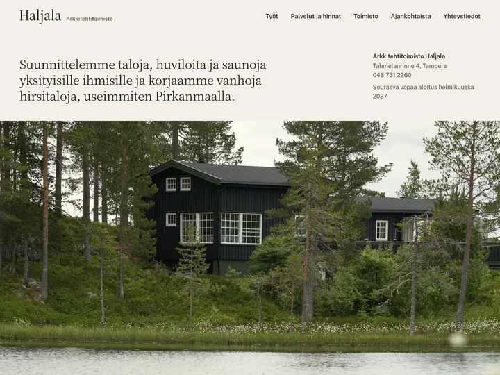
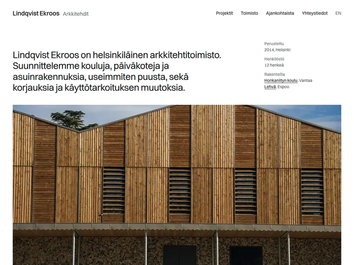
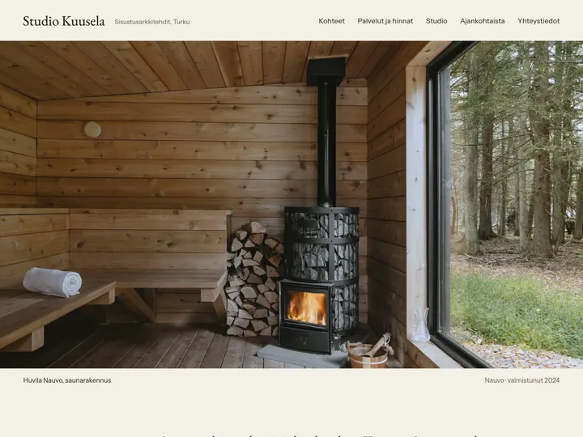
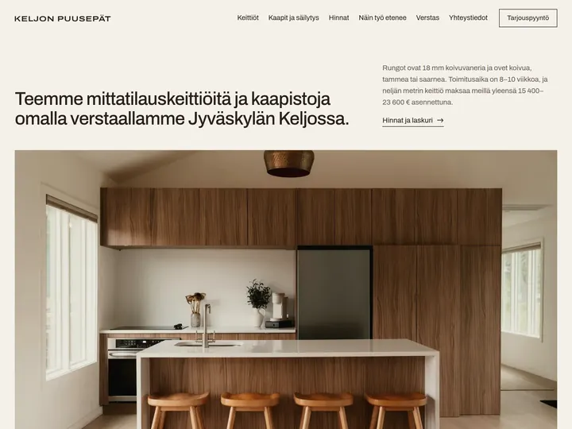
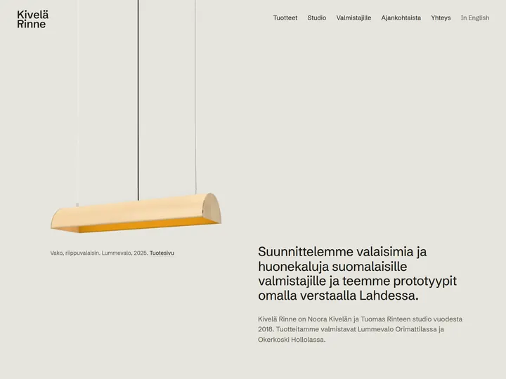
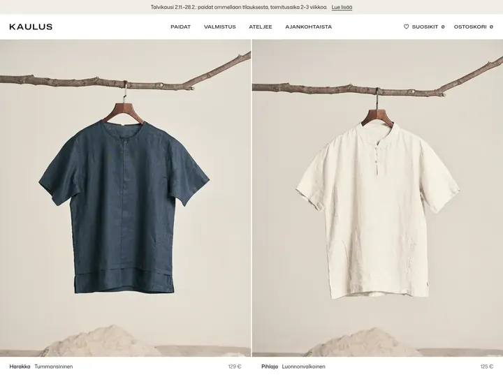

Työt
Valitut työt.
Kuusi sivustoa: kaksi arkkitehtitoimistoa, sisustusarkkitehti, puuseppä, muotoilustudio ja vaatemerkki. Jokaisen sivulla kerron, mistä lähdettiin ja mitä sivusto tekee yritykselle.
-

01 Arkkitehtitoimisto Haljala Arkkitehtitoimisto, Tampere Hinnat ja vuoden 2027 vapaat aloitukset näkyvät sivulla. Nimi, sanamerkki, ilme ja sivusto. 14 sivua, etusivu 1,0 Mt. Katso työ -

02 Lindqvist Ekroos Arkkitehdit Arkkitehtitoimisto, Helsinki 25 työn arkisto hankintatapoineen, kun kunta pyytää tarjousta. Nimi, tunnus, ilme ja sivusto. 21 sivua, suomi ja englanti, etusivu 0,5 Mt. Katso työ -

03 Studio Kuusela Sisustusarkkitehtitoimisto, Turku Pohjapiirros puretuin ja uusin seinin, suunnittelun hinta kohteen tiedoissa. Nimi, liikemerkki, ilme ja sivusto. 16 sivua, etusivu 0,5 Mt. Katso työ -

04 Keljon Puusepät Keittiöpuusepänliike, Jyväskylä Hintataulukko ja laskuri keittiön pituuden mukaan. Nimi, tunnus, ilme ja sivusto. 19 sivua, etusivu 0,6 Mt. Katso työ -

05 Kivelä Rinne Valaisin- ja huonekalumuotoilu, Lahti Jokaisella tuotteella tietokortti mittoineen ja valmistajineen. Nimi, leima, ilme ja sivusto. 14 sivua, etusivu 0,2 Mt. Katso työ -

06 Kaulus Vaatemerkki ja verkkokauppa, Helsinki Varastotilanne koon mukaan ja viikko, jolloin seuraava erä valmistuu. Nimi, merkki, ilme ja verkkokauppa. 18 sivua, etusivu 0,9 Mt. Katso työ
Haluatko työllesi tällaiset sivut?
Lähetä linkki nykyisiin sivuihisi. Saat ilmaisen luonnoksen uudesta etusivusta 48 tunnissa, eikä se sido mihinkään.
Pyydä ilmainen luonnos